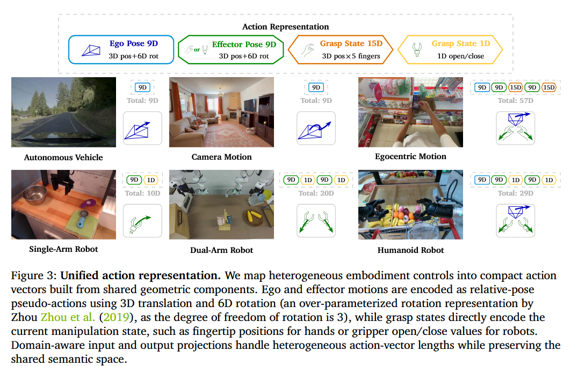
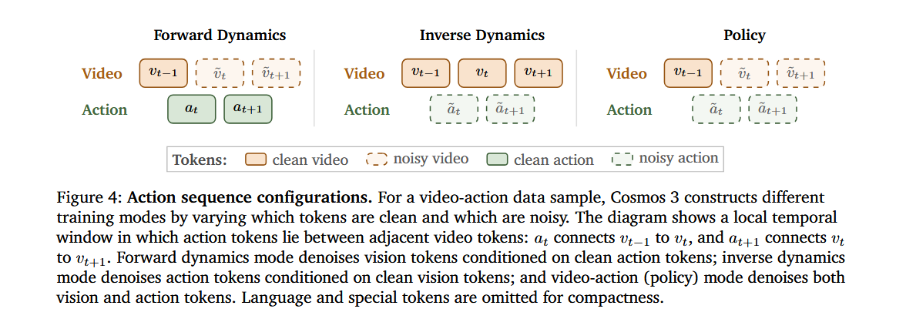
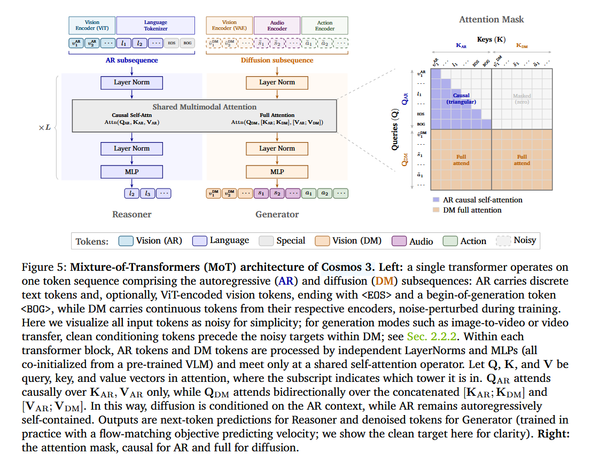

Source: Zotero note; match: first-page title.Open item in Zotero
COSMOS 3 Pretraining
Architecture:

Actions: Ego poses + Effector poses + Grasp states - domain-specific projection sharing MoT backbone
Tokens: AR + DM


Language, Text-to-Image, Text-to-Video, Image-to-Video/Video-to-Video, Video Transfer, Action.
Data